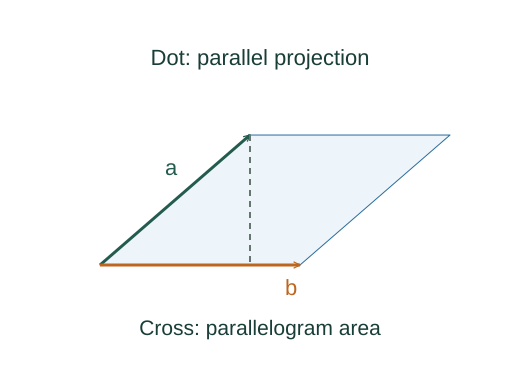

Dot and cross products: what they measure
The dot product extracts the part of one vector along the other. The cross product measures the oriented area swept out by two vectors. Work uses the first; torque uses the second.
What the symbols mean
a, b: nonnegative magnitudes; θ: angle between the vectors, from 0 to π. The cross-product direction follows the right-hand rule.
When this applies
The ordinary cross product here is a three-dimensional Euclidean construction with a right-handed coordinate basis.
Understanding the relation
Here the starting relation defines the quantity being discussed. We can understand that definition and derive its consequences, while keeping the definition itself distinct from those consequences.

Project one vector onto the other
The component of 𝐚 along the direction of 𝐛 is a cos θ. Multiplying by b gives the dot product. Only the parallel part contributes.
Interpret the sign
Parallel vectors give a positive dot product, perpendicular vectors give zero, and vectors pointing mostly opposite ways give a negative result.
Build an area from base and height
A parallelogram with sides 𝐚 and 𝐛 has base a and perpendicular height b sin θ. The cross product has that magnitude and is perpendicular to the plane.
Connect geometry to a force
For torque, only the force component perpendicular to the position vector changes angular momentum about the origin. A force directed straight toward the origin has zero lever arm.
A closer lookHow does torque change angular momentum? ↗A worked example
For 𝐚 = 2î and 𝐛 = 3ĵ, the dot product is zero and the cross product is 6k̂. Reversing the order of the cross product gives −6k̂.
Derivation behind this calculation ↗A point to keep straight
A dot product is a scalar. A cross product is a vector and changes sign when its operands are exchanged.
Check the assumptions and derivation ↗